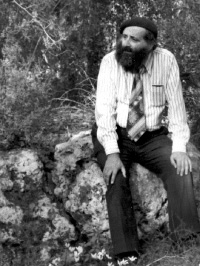

From Russia with Love and Devotion

Mrs. Fania Branover’s childhood was similar to that of her husband. During World War II, Jews were sent to Siberia. In retrospect, that which seemed terrible at the time is what saved them from the Holocaust. At the end of the war, the Jews who survived the bitter cold and starvation returned home. Among these Jews were the families of Fania and her husband. They were raised with a high level of culture, intellectualism and ambition. This was in stark contradistinction to their minimal knowledge of Judaism. All that remained with them of Jewish life was the observance of Yom Kippur and matzos on Pesach.
They met and married. Fania studied and eventually taught anatomy in university. Suddenly, her husband took an interest in Judaism and life was no longer the same. They decided to look for a way to leave Russia. It was the 1950’s, when another opportunity arose (aside from the great opportunity to leave in 1946/7) in which Polish refugees were allowed to return home. They became acquainted with a brother and sister from Poland who agreed, in exchange for a lot of money, to “marry them” in fictitious matrimony. The plan was for him to marry the sister and for his wife to marry the brother and this would enable them to escape to Poland.
The plan failed and in addition to losing a lot of money and the danger that the authorities would discover their ruse, they were stuck in Russia with no way out.
When their son Daniel was born, Prof. Branover went to the synagogue to find a way to have a circumcision performed. There he met with the Chassid Rabbi Nosson (Notke) Berkahan a”h who was mekarev him and began learning Torah and Chassidus with him. Prof. Branover turned into an ardent Chassid. As an intellectual and scientist, he wanted to delve into every inyan in Chassidus and he threw himself into his learning. Considering his standing as a professor in a university under Soviet rule, this was not easy.
Fania was an intelligent, rational person and had married a perfectly normal young man. He was a scientist, an engineer, he understood music and … he went nuts. Although her husband’s transformation wasn’t easy for her, she went along with it.
Living a Jewish life in Russia wasn’t simple and nearly every detail was complicated and required mesirus nefesh, such as with kashrus. A Jewish kitchen is the woman’s realm and Fania accepted this. She believed that if G-d gave us mitzvos, we need to accept them and implement them. She believed that everything we do in Yiddishkait needs to be done in the nicest, most dignified way that will attract people. For a woman with a weak background in Judaism who strove to do everything perfectly, it wasn’t easy; but she did it and was devoted to her husband in a most impressive way.
In the meantime, they renewed their efforts to leave Russia until they finally found a way out. Prof. Branover paid a fortune in order to leave since at that time the law stated that those with academic degrees who left the country had to compensate the government for their degrees. He had to pay more than $30,000 (which was a small fortune in those days) so the government would have no excuse to turn them down.
In 5732, when Fania was almost forty, the Branovers finally arrived in Eretz Yisroel. She became a pediatrician in the Negev at the Soroka Medical Center and also worked for the Ministry of Health. She was very successful in her work and was a familiar and esteemed figure both professionally and on a personal level.
TOTAL DEVOTION
The first time Fania went to the Rebbe, for Pesach 5732/1972, the women in the group from Russia received a bouquet of flowers. Nobody knew why or where it had come from. They found a note which said, “From Rebbetzin Schneersohn.” When they called to thank her, she invited the women to her home (for some reason, Fania wasn’t there). The women spent two hours with the Rebbetzin who inquired about the state of Judaism in Russia. Before they left, the Rebbetzin explained the reason for the special invitation. “The Rebbe told me, ‘If you want to see genuine Chassidim, you must invite them.’”
Whoever did not experience it, cannot truly understand what tremendous mesirus nefesh was required of Fania. Suddenly, midlife, her husband became a baal t’shuva. The man she had married had become a fanatic who was hardly ever home and was constantly busy with rescuing people with his time and money. Although she highly respected her husband, at first she was very uncomfortable with the changes, but she was nevertheless moser nefesh to support him.
Although she was an independent thinker, she submitted to her husband and the Rebbe. Consequently, when they left Russia and went to the Rebbe, she had a very special connection to him. She had very interesting conversations with the Rebbe on many subjects and merited a special closeness. She asked the Rebbe about the things that were hard for her to accept and the Rebbe explained it all in a special, personal way which spoke to her mind and heart.
For example, fashion was important to her. She asked the Rebbe why a woman had to wear a skirt and not pants. The Rebbe asked her why she cared. She said it was the fashion. The Rebbe asked her, “Why do you have to follow what so-and-so in Paris decided is fashionable?” She accepted this. Her relationship with the Rebbe was on a personal level, not just as a Chassid and Rebbe.
After several years, when her husband had yechidus and asked for a bracha before returning home, the Rebbe asked him whether he had bought a gift for his wife. He said that he hadn’t, and the Rebbe said, “You should know that it is very important! You must go and buy a gift for your wife.” It did not end there because Prof. Branover had no idea what kind of gift to buy. The Rebbe advised him, “You know, an electric dishwasher is a very good gift for a wife.”
Theirs was a unique relationship and some people explained it as resulting from Fania’s great devotion and willingness to forgo her comfort and desires for the ideology of her husband, the ideals of the Rebbe.
From the outset, Prof. Branover related to the Rebbe as Moshiach and was absolutely convinced of this. She followed him and said that most Chassidim are “Misnagdim” who don’t understand this issue and don’t realize they ought to relate to the Rebbe completely differently; and it’s impossible to compare him to anything else at all.
Perhaps it was because both of them had strong scientific backgrounds that their assessment was very precise and hit the mark even many years ago.
ROYALTY
Mrs. Branover was a very elegant, refined woman, dignified and well-groomed. She had a unique brimming personality highlighted by a terrific sense of humor, with an opinion about everything.
She was gifted with a keen sense for beauty, aesthetics, and design. She always knew how to match and arrange things: flowers, clothing, and in her home. People were always amazed, “How did you do that?” It wasn’t a matter of money; she had the uncanny ability to take simple things and make them beautiful. She moved several times, to Tel Aviv, Yerushalayim, and Beer Sheva, and she transformed each home into something artistic.
She used this talent for holy purposes, to make Hashem a dwelling down below. Whatever had to do with Shabbos and kashrus was done in a beautiful manner, aesthetically pleasing, with stunning designs. When her son opened a restaurant near 770, she would go there to help with the food, to stress the uniqueness of a Jewish kitchen; that the food produced in a kosher kitchen ought to be rich, professional, with a variety of spices, tastes, flavors and colors.
RUTH
Fania was a charming woman, young at heart and very charismatic. When her husband turned eighty, she organized a birthday celebration and asked her son to buy special foods that are ethnically Russian, like goose fat and chopped liver, and she prepared it all.
Her son Danny, chairman of SATEC, spoke about a mother and a grandmother who was very involved, loving, and family-oriented. She wanted to know about how her grandchildren were developing and did not forget a single birthday. She pampered them with gifts and cakes and it was always something special and thoughtful. She never seemed old in her style and behavior; she was young in spirit and full of life.
People sought her out. At the age of 75 she had new friends in their forties. She gave a lot of attention to people who were far younger than she was. She was involved with people and was liked by all.
Fania saw herself as a shlucha and said that wherever a person goes, he has to know that the Rebbe made him a shliach. He is obligated by this position and cannot allow himself to do whatever he feels like.
She was always well-groomed with an appearance that bespoke careful thought and consideration. She would say that this is how she expresses herself and displays her Jewish royalty.
In the final years of her life, due to her illness, the family lived in the US. She was told it would be a good idea to have a name added and she chose Ruth. Why Ruth? She said, “I followed my husband like Ruth followed Naomi.”
Fania-Rus was sick for nine years. She was a fighter and did not lose hope; on the contrary, she was full of life. She passed away at the age of 75. Up Above, she is surely crying out for Moshiach, whom she had identified long before it became public knowledge and with whom she enjoyed a special association.
***
TRUE PARTNER
Rabbi Betzalel (Talk) Schiff, chairman of Agudas Shamir, who worked alongside Prof. Branover for many years and helped us as a family friend in writing this article, relates:
“I met Prof. Branover for the first time when I was a law student. When I went with some other religious fellows from Tashkent, where I lived, to Riga, we had a secret minyan on Shabbos. Someone walked in wearing a beret and afterward, they said it was Prof. Branover who was a famous Russian scientist.
“The professor and his wife had a special relationship. One time, at the beginning of spring, when we were still in Moscow, we vacationed at a resort in the forest and went on an outing. I was amazed by the special relationship they had, two intellectuals with a broad range of knowledge, permeated to the very marrow of their bones with a Jewish faith that seemed to burst forth from their beings. They identified the trees, the plants and birds. They took in the tremendous beauty of nature and got me to look at things differently. I suddenly saw how the creation came to life after the winter, how ants work in unison. I was bowled over by this special bond, how despite the differences, they were involved with one another and saw G-dliness within everything.
“Shamir was founded by the Rebbe in 5733 for observant Russian Jews. The Rebbe appointed Prof. Branover as president of the organization and me as the chairman. We were among several dozen Lubavitcher families who were unable to leave Russia in 1946/7 and were forced to remain there for decades. That is where I met Prof. Branover and since then, we have worked together.
“The most important work of the organization is translating s’farim into Russian. As of now, Shamir has translated about 300 s’farim, starting with the basics such as the T’hillas Hashem Siddur, Chumash, Tanya, and HaYom Yom.
“The Rebbe considered this organization vital in the aid of Russian Jews so they could adopt a new identity of proud Jews, which had been taken from them by the Soviets. The Rebbe said that the Russians had taken away G-d and so they created a different god called science and academia. Shamir is distinctive in that it first and foremost targets religious academics so they can become a positive influence on other Jewish academics. This is in addition to restoring their true identity which had been robbed from them, by providing Torah material in Russian. The Rebbe said that since we are both academics and religious, other academics will listen to us more readily than to other people.
“Living with a professor is not easy, especially someone like Prof. Branover who was a 24 hour a day public figure. His wife was a strong woman, independent, as well as devoted to her husband. She was involved in his wide-ranging activities.
“Although she was an elegant, royal woman, she was also well-liked and got along easily with people. She was particular when it came to matters of Yiddishkait and was a T’hillim zoger (one who said a lot of T’hillim).”
Beis Moshiach (staff). "From Russia with Love and Devotion." Beis Moshiach, no. 826 (March 7, 2012).